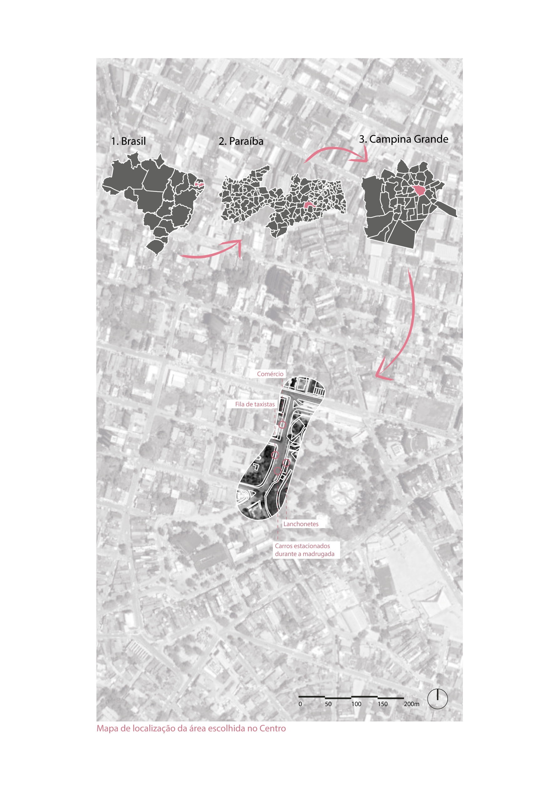
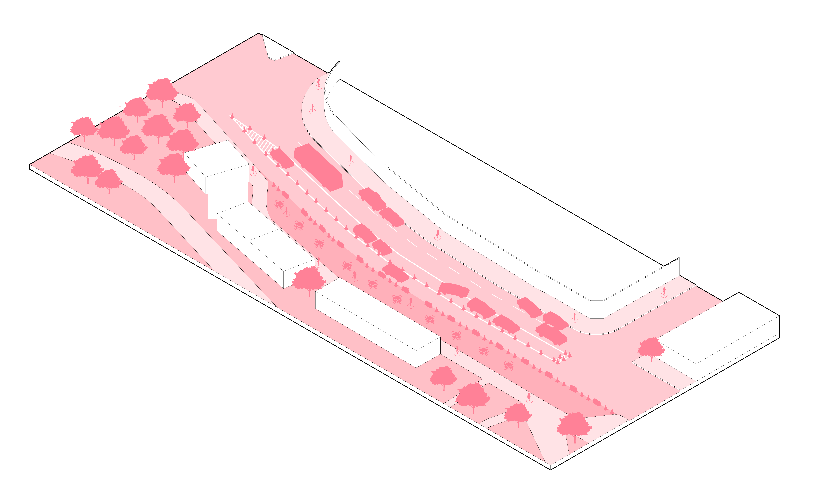
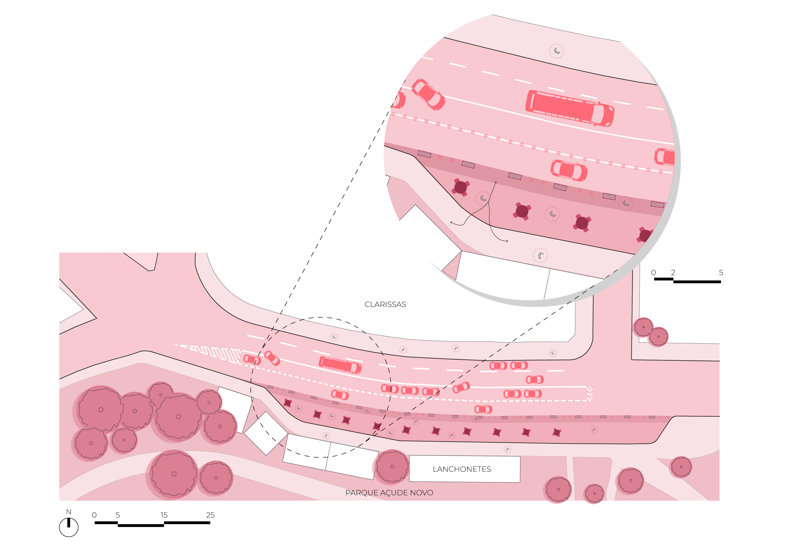
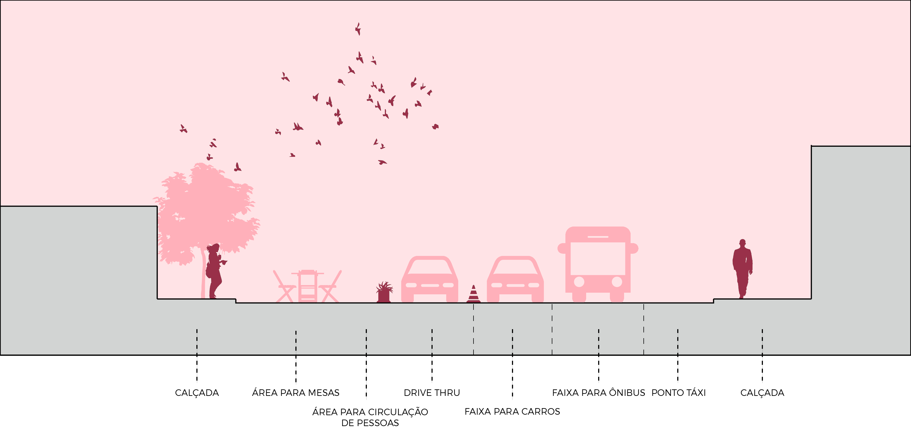

©2017 LabRua
Template: Bootstrapious
+ Kishan B

COVID - Entorno Açude Novo
2020-15-09; covid19, diretrizes, acude-novo
No atual contexto mundial, onde muitas discussões são pautadas em torno da pandemia por COVID-19, muito se levanta acerca do uso da cidade em conjunto à necessidade de medidas que reforcem o distanciamento social. Como se sabe, a postura do atual governo vem sendo a de negação da necessidade dos mínimos cuidados de prevenção ao contágio do novo coronavírus. Apesar da flexibilização do isolamento na maior parte das cidades do Brasil, o distanciamento ainda se faz necessário e, para isso, surge o questionamento sobre que espaço pode ser oferecido para que as pessoas façam uso da cidade de forma segura. Pensando nisto, o LabRua vem desenvolvendo uma série de propostas de redesenho urbano fazendo uso de ferramentas do urbanismo tático. Esta proposta tem como objetivo apresentar diretrizes para promover o uso mais seguro dos espaços das lanchonetes presentes às margens do Parque Evaldo Cruz, popularmente conhecido como Açude Novo.
por André Cabral Guimarães, Andrey Guedes, Natallia Cruz, Raiff Mangueira e Robson Porto.
A área localizada na Avenida Santa Clara, Centro de Campina Grande-PB, é bastante conhecida pela população local e concentra um grande fluxo de pessoas diariamente, sobretudo no período da noite. Atualmente, existem na área 5 estabelecimentos comerciais, todas lanchonetes que dispõem suas mesas internas aos estabelecimento e na calçada. Além disso, ocorre também a opção dos clientes serem atendidos e realizarem suas refeições dentro de seus veículos, que são estacionados 45º em relação a calçada.

Tendo em vista esses aspectos e com base em diagnósticos realizados na área, foram pensadas em propostas de diretrizes que possibilitem a utilização segura da região e adequação dos espaços de calçada e da via para atendimento aos clientes das 5 lanchonetes existentes. A área já foi alvo de pesquisas anteriores do Laboratório, possuindo um diagnóstico prévio que auxiliou na formulação da proposta de redesenho, e de diretrizes que respeitassem as recomendações da OMS (Organização Mundial de Saúde). Em busca de uma maior segurança para os usuários da área e respeitando as recomendações da OMS de distanciamento social, pensou-se em e formas mais seguras de se utilizar da área diminuindo a contaminação dos usuários pelo novo coronavírus.

O projeto propõe um redesenho urbano da Avenida Santa Clara, utilizando urbanismo tático: com marcações feitas com pintura, cones e vasos com planta, especificando e sinalizando na via a divisão das áreas para entendimento de suas respectivas funções. Foram apontados a circulação dos veículos, estacionamento, área de mesas e faixa para o serviço drive thru. As mesas, já usadas pelos restaurantes, foram redistribuídas no espaço, dispostas agora a 1,5m de distância umas das outras, considerando também o espaço de circulação de pessoas. O estacionamento foi reorganizado com a vaga passando a ser paralela a via, em vez de 45º, bem como o espaço para drive thru. Dessa forma, é liberado duas faixas de rolamento, garantindo a circulação dos veículos de forma mais adequada.

A mudança na direção e número das vagas de estacionamento permite também a extensão da área de pedestre, possibilitando a separação da área de atendimento do espaço de trânsito dos pedestres. Somado a isso, é estipulada uma faixa, junto à calçada, para funcionamento do sistema drive thru, mantendo a devida distância entre este e as mesas. Ao lado, outra faixa foi proposta, designada para atender a atual demanda das pessoas que são atendidas dentro do veículo. Assim, o que resta do leito carroçável é destinado ao trânsito de veículos, mantendo a área de estacionamento dos taxistas pré-existentes. Para a outra calçada não foi proposto nenhuma alteração, nela, a demanda de pedestres é bem menor e sua largura já permite a circulação de pedestres de acordo as recomendações da OMS. 

Diante do atual cenário que acaba incentivando o aumento do uso de veículos motorizados individuais, associado ao risco da permanência em ambientes fechados, as diretrizes buscam a diminuição do uso desses modais e o incentivo a meios de transporte ativos. A bicicleta e o deslocamento a pé, são considerados modais capazes de diminuir muito o contágio da Covid-19, apesar as cidades brasileiras ainda não fornecerem infraestrutura adequada que incentive ou priorize estes meios de transporte.
É importante destacar que esta proposta não encerra o debate acerca do tema. As diretrizes aqui apresentadas, não buscam ser uma verdade absoluta, apenas uma entre tantas alternativas que busquem a melhor adequação dos espaços públicos ao contexto da pandemia. Nosso intuito é incentivar um debate que inclua os diferentes grupos sociais (raça, gênero e classe) e despertar a atenção do poder público a respeito do seu papel no enfrentamento da atual crise sanitária.
.